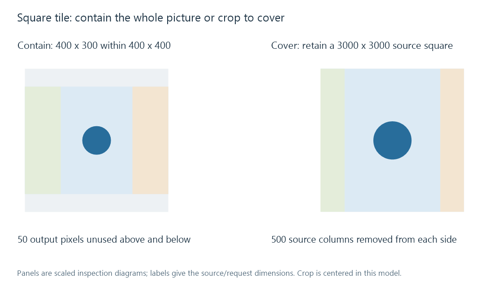
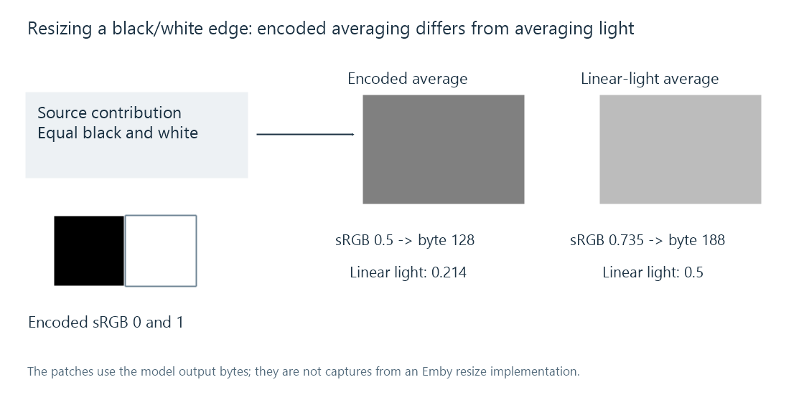

Image resizing
Image resizing reconstructs a source image onto a new sample grid, with fit/crop policy, filtering, colour domain and alpha handling affecting the result.
A 4000 × 3000 photograph does not have the same shape as a 400 × 400 browsing tile. A resize request must first decide whether to retain the whole picture or fill the tile by cropping.
Those geometry decisions come before choosing how the source samples contribute to each output pixel.
Contain and cover solve different requirements
For contain, use the smaller dimension scale:
min(400/4000, 400/3000) = 0.1.
The picture becomes 400 × 300, leaving 100 vertical pixels of unused tile space. A centered arrangement leaves 50 above and 50 below.
For cover, use the larger scale, 400/3000 = 2/15. The scaled picture is approximately 533.33 × 400. A centered crop removes approximately 66.67 scaled pixels from each side.
An equivalent source-space description keeps a 3000 × 3000 square, removing 500 source columns from each side, then scales that square to 400 × 400.

Real implementations choose integer sizes and rounding. The calculations above describe ideal geometry; they do not specify an Emby crop algorithm.
Output pixels correspond to source neighborhoods
One common pixel-centre mapping for uniform scale s places output column j at source coordinate:
x = (j + 0.5) / s − 0.5.
At scale 0.2, the first two output centres correspond to source x = 2 and 7. This gives a phase relationship between the grids. It does not itself define the filter or its neighborhood.
Nearest-neighbor chooses a source sample. Bilinear and other scaling kernels combine samples with specified weights. Downscaling also needs an appropriate reduction of detail above the output grid's useful spatial frequency.
Thin patterns expose aliasing
Imagine alternating black and white source columns. Selecting every second column can produce all black or all white depending on the starting phase. The original pattern had equal contributions from both.
A suitable averaging/reconstruction process can instead produce a representative gray at the smaller scale. This is why a thumbnail can show moiré, false patterns or vanished thin lines even though its dimensions are mathematically correct.
Sharper-looking filters can also create edge overshoot/ringing. The useful choice depends on the source content and intended result, rather than on a universal ranking of kernel names.
Average light and average encoded values differ
Consider two sRGB samples: black at 0 and white at 1. Averaging their encoded values gives 0.5, which corresponds to approximately 0.214 in linear light.
Averaging their linear-light values gives 0.5 light units. Re-encoding that result as sRGB yields approximately 0.735, or 188 on a rounded eight-bit scale. Direct encoded averaging instead gives about 128.

These are defined numerical models using the sRGB conversion equations. They do not assert that every image library resizes in linear light. The working domain is part of the operation's meaning.
Transparent edges need coherent filtering
Colour hidden under zero alpha can enter an interpolation if colour and coverage are filtered independently without suitable treatment. That can produce a dark or coloured fringe when the resized logo is placed over a page.
A process can use an appropriate premultiplied working representation while filtering, then write the output in the file format's required convention. The transparency article explains why a flattened edge cannot be repaired simply by changing its later background.
Consider two source pixels in a declared linear numerical domain: transparent black (colour 0, alpha 0) and opaque white (colour 1, alpha 1). Averaging their straight colour and alpha separately gives colour 0.5 and alpha 0.5. Over black, that produces only 0.25.
Averaging premultiplied values instead gives premultiplied colour 0.5 and alpha 0.5. Its equivalent straight colour is 1, so the result over black is 0.5. Over white, the first method yields 0.75, while the coherent white edge yields 1.
| Halfway edge | Over black | Over white |
|---|---|---|
| Independently averaged straight colour/alpha | 0.25 | 0.75 |
| Premultiplied working interpolation | 0.5 | 1 |
These values explain the dark fringe in this specific two-pixel model. Colour-domain choice remains an additional question; premultiplying does not itself convert encoded samples into linear light.
In an Emby comparison, examine the source, generated image dimensions/crop and final app scaling. A good server derivative can still be stretched or enlarged at the presentation stage; a sharp original can already have been reduced into an unsuitable crop before it reaches that app.
See Also
- Image resolution
- Image thumbnail generation
- Image transparency
- How Video Scaling Works
- Nearest-Neighbor Video Scaling
- Bilinear Video Scaling